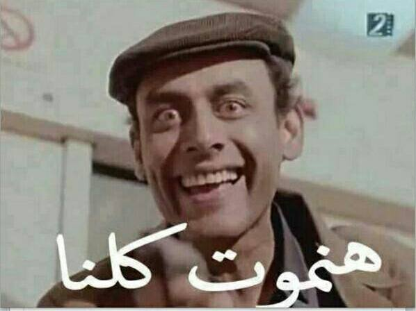
صورة لميم مأخوذة عن أحد لقطات المشهد الأخير من فيلم "بطل من ورق" (1988)
في 1988 أخرج المخرج نادر جلال فيلم "بطل من ورق"، بطولة ممدوح عبد العليم وآثار الحكيم. وتدور قصته حول كاتب سيناريو، مجدي، الذي، في ضربة من الحظ أو سوء الحظ، يتحول ما يكتبه إلى واقع، بشكل يبدو غير مفهوم. يكسر نادر جلال حدة وجدية تلك الفكرة بمعالجته الكوميدية للقصة، فبطل الفيلم ممدوح عبد العليم، "النبي"، كاتب سيناريو شاب ساذج من الصعيد، يحاول أن يقنع منتجي ومخرجي القاهرة بأفكاره، في ظل بيروقراطية الإنتاج السينمائي وتحويل الفن إلى "مؤسسة قطاع عام"، ولا ينقذ ممدوح عبد العليم غير تماهي المختل أحمد بدير مع سيناريو فيلمه، فـ"يقوم بتنفيذ سيناريو الفيلم"، في سلسلة من المفارقات الكوميدية–العبثية نوعًا ما.
ولا يميز "بطل من ورق" غير أداء أحمد بدير المفتعل لشخصية المختل الذي ينفذ سيناريو مجدي، بقدر لا بأس به من الانتشاء. فأحمد بدير، في غفلة من القدر، أصبح "أداة الرب" في تنفيذ القدر، وهو يحي ويميت، فينتشي بدير بإدراكه وتماهيه مع كونه الشخصية التي ستجلب الموت للجميع. الموت كقوة حقيقية للمساواة. فلا يستطيع أحد مهما فعل، الهروب من حتميته.
تمر العقود وفي حالة من حالات التبديل والتوفيق الثقافي، وفي لحظة مشابهة في التماهي مع حتمية الموت أو الهزيمة، بعد عشرة أعوام من الثورة، وفي ظل وباء عالمي لا أفق في السيطرة عليه، ظهرت إحدى لقطات الفيلم كميم يعبر عن شعور الهزيمة والموت، كحالة مطلقة للمساواة، لنضحك قليلاً إذن.
هدية الموت
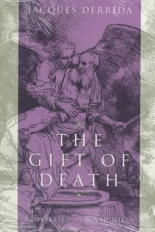
غلاف كتاب هدية الموت
قدم الفيلسوف الفرنسي جاك دريدا (1930-2004) ورقة بحثية في مؤتمر في رويمونت في فرنسا في 1990، تحت عنوان "أخلاقيات الهدية" ونُشرت الورقة في 1992 تحت اسم "الوقت المعطى"، وفي 1999 نشر دريدا نسخة أخرى من المقالة، تحت اسم "هدية الموت" مضيفًا نصًّا آخر عن كافكا.
حاول دريدا أن ينقذ الأخلاق، في السياق الأوروبي، من الخواء العدمي الذي خلقه الفيلسوف الألماني مارتن هيدجر (1889-1976) بكتابه الأشهر "الوجود والزمن" (1927)، فعندما قال هيدجر إن الحياة "ما هي إلا برهة أو فسحة من الزمن يحفها الموت على الجانبين"، تاركًا خواءً معنويًّا وأخلاقيًّا كانت مآلاته السياسية والعملية مرعبة.
يقر دريدا بحتمية الموت ولكن، كعادته الشهيرة، يلعب دريدا بالمصطلح الفرنسي se donner la mort لـ"يقتل أحدهم" أو "ينتحر"، والذي يعني حرفيًّا "يعطي لنفسه الموت"، في مفارقة لغوية تعطي دريدا الفرصة لإنقاذ فاعلية الإنسان من العدم المطلق.
يبني دريدا جدلاً ينتقد فيه ما فعله هيدجر بأن الموت حدث فردي بشكل مطلق، لا يستطيع أحد أن يمنعه عن أحد أو أن يموت بدلاً منه. وفي فردية الموت المطلقة يصبح كل إنسان مسؤول بشكل مطلق كذلك عن موته، لـ"يعطيه لنفسه".
وفي حتمية موت البشر تظهر احتمالية إدراك مصير مشترك، يخلق لحظة من الاعتراف والتعرف على "الآخر".
عن الخفافيش والنهر
لم يكن مابالو لوكيلا، الناظر بإحدى مدارس قرية يامبوكو في شمال جمهورية الكونغو الديموقراطية، يعرف أن زيارته لإحدى الإرساليات على نهر الإيبولا، في صيف 1976، ستكون آخر رحلة يقوم بها. فبعدها بعدة أيام أصيب بالحمى وبدأت أعراضه تسوء حتى وافته المنية بعد بداية ظهور الأعراض عليه بنحو أسبوعين.
وتساقط المرضى بعد وفاته تباعًا حتى أعلنت حالة الطوارئ في البلاد، ولمدة 26 يومًا عُزلت المنطقة الشمالية والعاصمة كينساشا، حتى تبين أن سبب المرض هو فيروس الإيبولا واكتشف الباحثون أن سبب تفشي الوباء كان غالبًا نتيجة استخدام راهبات الإرسالية البلجيكيات للحقن دون تعقيمها أو غليها.
يعتقد العلماء أن فيروسات الإيبولا تنتقل عن طريق الأكل، أو التعامل مع ما يسمى لحوم الأدغال مثل أنواع مختلفة من القردة والظباء ولكنهم لا يعلمون بالتحديد ما مستودع الفيروسات، ولكن على أغلب الظن أن خفافيش الفاكهة هي مستودع الفيروسات، وغالبًا ما تتناقل الفيروسات عن طريق مضغ الفاكهة التي تناولها أحد الخفافيش، والتي تتناولها إحدى فصائل لحوم الأدغال من قردة أو ظباء ومن ثم تنقلها إلى الإنسان.
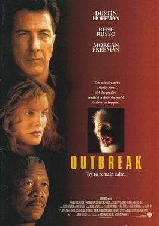
بوستر فيلم Outbreak – الصورة للتوضيح، جميع الحقوق محفوظة لأصحاب الملكية الفكرية، المصدر: ويكيبيديا
كانت أول مرة أسمع كلمة وباء عند مشاهدتي فيلم "التفشي" أو Outbreak – 1995، إخراج ولفجانج بيترسن، ولم أستطع النوم لمدة أسبوع. أصابتني حالة متواصلة من الهلع من تلك الكائنات المتناهية الصغر التي تستطيع أن تتحايل على خلايا الجسم، فتستولي عليها وتسخرها للتكاثر حتى تنفجر الخلايا وتتداعى أعضاؤنا واحدًا تلو الآخر.
يتناول الفيلم قصة تطور وباء الإيبولا في غرب أفريقيا، ولكن لم يلتزم بالوقائع التاريخية أو العملية عن طبيعة المرض ولكن فكرة أنه من الممكن أن توجد في الطبيعة كائنات أو أشكال من الحياة تستطيع أن تقضي على الإنسان وبتلك السرعة وبتلك القسوة كانت بعيدة عن ذهني.
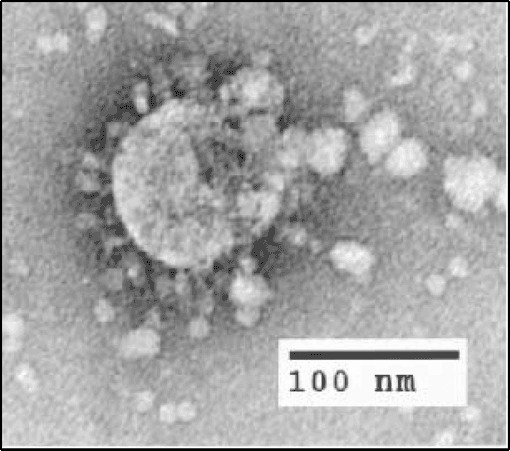
صورة ميكروسكوبية لفيروس كورونا المرتبط بالمتلازمة التنفسية الحادة الشديدة النوع 1 – المصدر ويكيبيديا
في عام 2003 عندما تفشى وباء سارس في الصين، حاول العديد من العلماء الصينيين والأمريكيين رصد طرق انتشار الفيروس، وبعد أشهر من التحاليل والتقصي تم اكتشاف أن خفافيش حدوة الفرس بمختلف أنواعها هي المستودع الأساسي لسلالات مختلفة من الفيروسات التاجية. فالخفافيش لا يصيبها الفيروس بالأذى، نتيجة لأثر الطيران وما يتطلبه من مجهود منها، فقد تطور جهازها المناعي بشكل سمح بسرعة التعافي ومحاربة المرض دون حدوث الالتهابات الحادة التي قد تصيب فصائل الحيوانات الأخرى ومنها الإنسان.
وبالطريقة نفسها التي قد تنتقل بها فيروسات الإيبولا من الخفافيش إلى الحيوانات الأخرى، تنتقل مجموعة مختلفة من الفيروسات التاجية من الخفافيش إلى الحيوانات الأخرى، التي قد تأكل النباتات أو الفرائس نفسها، التي يتم صيدها وبيعها حية في أسواق الحيوانات في مختلف مقاطعات الصين.
ولا يخفى على القارئ أن ما حدث في 2003 هو ما تكرر مرة أخرى في 2020؛ عندما تفشى الوباء في مقاطعة "ووهان" في الصين في نطاق أحد أسواق بيع الحيوانات. لا يعلم العلماء حتى الآن أي فصائل الحيوانات بالتحديد كانت حلقة الوصل بين الخفافيش والإنسان، والتي من خلالها تطور إحدى سلالات الفيروس لتصيب الإنسان بكوفيد-19، ولكنهم يعلمون أن هناك علاقة مؤكدة بين استهلاك الحيوانات وصيدها حية أو تناولها وبين انتشار وتطور المرض.
يؤكد العلماء أن ظاهرة انتشار الأمراض حيوانية المنشأ أو المشتركة بين الإنسان والحيوان هي نتيجة مباشرة للإتجار في الحيوانات النادرة والمعرضة للانقراض، والتعدي على بيئات تلك الحيوانات عن طريق قطع الغابات على سبيل المثال، أو التغيرات المناخية نتيجة نشاط الإنسان من حرق مشتقات البترول وغيرها وما تسببه من تدمير لتلك البيئات، مما يؤثر بشكل مباشر على توزيع الحيوانات البرية وغير المستأنسة، ويضعها في اتصال مباشر بالإنسان أو بفصائل مستأنسة يستخدمها الإنسان، مما يسمح بوجود عدة مسارات لنقل أنواع جديدة وغير مألوفة من مسببات المرض والتي قد تتطور مما يصيب الإنسان بأمراض ليس لديه أي مواجهة مناعية ضدها كما هو الحال في كوفيد-19.
عن السماء والظلام
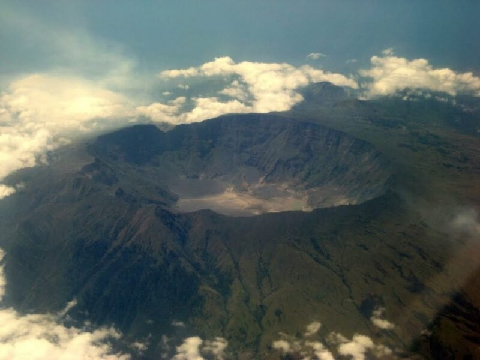
صورة لفوهة بركان تمبورا – المصدر Volcanogeek
لم يدرك أحد ما الذي حدث في صيف عام 1816 والذي عرف بـ "عام الفقر". انطفأت السماء وتوارت خلف الحجب وأسدل الليل ستره في عز الظهيرة، وأعتقد الجميع أن العالم سينتهي. لم يدرك الجميع أن تلك الظلمة سببها انفجار شديد لبركان تابمورا في إندونيسيا كان أسوء انفجار بركاني على مدار 10000 سنة. غطى الرماد البركاني أشعة الشمس فانخفضت الحرارة وأظلمت السماء وهلكت المحاصيل، وجلس الجميع في نصف الكرة الشمالية يتساءلون إذا ما كان العالم سينتهي أم لا.
وفي ذلك الصيف، الذي أطلق عليه بعد ذلك "صيف بلا شمس"، كتب الشاعر الإنجليزي اللورد بايرون (1788-1824) قصيدته الشهيرة "الظلام". وكأن بايرون شهد ما نشهده الآن من دمار وظواهر طبيعية غاية في الغرابة، فرأى ما نراه، ووصفه كما لم نستطع أن نصفه. فأدرك أن ساعة فناء العالم لن تكون الطبيعة في حاجة إلى الشمس، أو السحب أو الشجر أو حتى إلينا نحن أنفسنا، فظلام العدم سيكون سيد الكون.
"انتهت السحب، لم يعد الظلام في حاجة إليهم، فلقد أصبح هو سيد الكون".
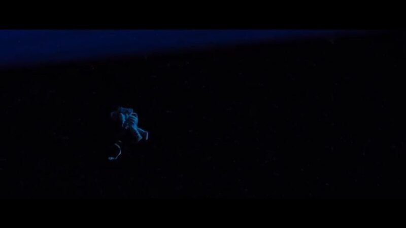
لقطة من فيلم آد أسترا
إنها حقا فكرة آسرة؛ ذلك الهوس، البحث المضني عن أشكال الحياة الذكية في ذلك الكون الواسع اللامتناهي. هوس حقيقي ينتاب كل من ينظر إلى السماء ويرى تلك الكويكبات المتناثرة على عرض السماء وطولها.
استطاع المخرج جيمس جراي أن يصور ذلك الهوس بحس شديد الذكاء والخفة في فيلمه الأخير "آد أسترا" أو إلى النجوم (2018). فنرى تومي لي جونز رائد الفضاء الذكي، الشجاع الذي تمكنت منه فكرة إيجاد أشكال أخرى من الحياة في الكون أو بمعنى أدق الهروب من واقع حياة البشر والبحث عن حياة أخرى حتى نسي أسرته، وزوجته وابنه، براد بيت، وظل يسجل بشكل شديد الدقة كل ملاحظاته عن احتمالية مثل تلك الحياة، ولو كلفه الأمر تدمير الحياة بأكملها في باقية المجموعة الشمسية نفسها.
يختفي تومي لي جونز بعد مهمة استطلاع واستكشاف، وتنقطع أخباره لمدة عقدين من الزمن حتى يبدأ ظهور أنشطة مريبة من وحدة الملاحظة التي كان يديرها.
يصبح براد بيت رائد فضاء مثل أبيه ويستدعى لمهمة استكشافية لمعرفة ذلك النشاط المريب نشاط إشعاعي يهدد المجموعة الشمسية ويكتشف بيت أن الومضات الإشعاعية قادمة من نفس تلك وحدة الملاحظة، ويشك أن جونز ما يزال حيًّا، وأنه من المحتمل أن يكون هو المسؤول عن ذلك الخلل الإشعاعي.
وفي أحد المشاهد استطاع جراي تكثيف كل تلك الأفكار عبثية البحث عن أشكال أخرى من الحياة بدلاً من الحفاظ على أشكال الحياة الموجودة بالفعل، الاضطلاع بالواجب الأخلاقي المحتم على البشر كذوات مفكرة مسؤولة عن نفسها وعن العالم الذي تعيش فيه يحاول الابن إنقاذ أبيه، بعد اكتشاف أن الخلل الإشعاعي سيدمر المجموعة الشمسية بالفعل إذا لم تُفجَّر محطة الاستكشاف. إلا أن الأب يرفض مساعدة الابن، بل يتملص من قبضته، مكررا "دعني يا بني، خل سبيلي"، وكأن جراي يقول لنا دعوا تلك الأوهام وعودوا مرة أخرى إلى الأرض، وما عليها من حياة والتي هي، قطعًا، أولى بالإنقاذ.
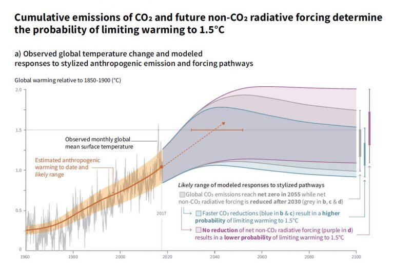
رسم بياني من تقرير اللجنة الدولية للتغيرات المناخية، الاحتباس الحراري وزيادة متوسط درجة حرارة الأرض 1.5 درجة مئوية
لم أندم على ضعفي في الرياضيات وفي فهم الأرقام أكثر مما ندمت عند قراءة تقرير اللجنة الدولية للتغييرات المناخية. فجميع نتائج اللجنة مبنية على تطوير نماذج من عدة متغيرات تحاول من خلالها استنتاج العلاقات المختلفة بينها والتنبؤ بنتائج نماذج التغير مستقبلاً. إلا أن الشيء الوحيد الذي لم يتطلب الكثير من الفهم هو أن جميع سيناريوهات المستقبل التي تنبأت بها اللجنة كارثية على أحسن حال.
يؤكد التقرير أن الاقتصاد الكربوني المبني على استخراج وحرق مشتقات الأحفوريات بترول وفحم وغيرها والذي بدأ منذ نهايات القرن التاسع عشر، ووصل إلى أقصى مراحله تطورًا وانتشارًا منذ منتصف القرن العشرين، وصل إلى مرحلة من الإخلال من أنظمة المناخ بشكل لا يمكن التحكم فيه أو السيطرة عليه.
وتُرجم ذلك بتغيرات شديدة الوطأة في أنماط المناخ من جفاف، أمطار، أعاصير من ناحية، ولكن من ناحية أخرى فإن تصاعد وتيرة الازدياد الحراري بشكل يؤثر بشكل مباشر على دورات الزراعة والغذاء بزوغ مصطلح مثل مجاعات تغيرات المناخ والصيد وكذلك دورات النقل والمواصلات.
لا يرسم التقرير أي صورة أو تصور إيجابي عن أفضل سيناريو محتمل، فقد سبق السيف العذل كما يقولون، ولكن يؤكد التقرير أن ما يتخذه العالم من حكومات وأنظمة في العقدين القادمين سيشكل مصير البشرية في الخمسين سنة القادمة.
الأنهار والحقيقة العارية
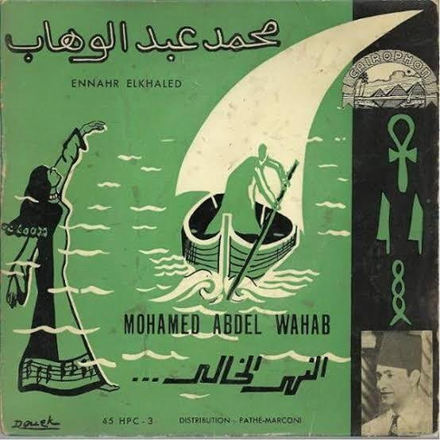
غلاف لأسطوانة نهر الخالد
في عام 1954 غنى عبد الوهاب واحدة من أشهر أغانيه، "النهر الخالد"، من تأليف الشاعر محمود حسن إسماعيل، والتي ربما كانت استلهامًا للواقع السياسي ذاته. فهذا هو العام الذي قدم فيه عبد الناصر طلب تمويل مشروع بناء السد العالي إلى البنك الدولي. ففي أعقاب مؤتمر باندونج والمفاوضات التي تبعتها من صفقة الأسلحة من الاتحاد السوفيتي عن طريق تشيكوسلوفكيا والاعتراف بالصين، والذي أدى إلى قلق الإدارة الأمريكية ورئيسها آنذاك دوايت أيزنهاور، ما ترتب عليه إعادة النظر في طلب عبد ناصر للتمويل ورفضه. والذي بسببه أعلن ناصر تأميم القناة، وكان رد الفعل على قرار التأميم هو العدوان الثلاثي على مصر في 1955 والذي كاد أن يؤدي إلى اندلاع حرب عالمية ثالثة.
ما لا يعرفه الكثيرون أنه في أثناء محاولات ناصر إيجاد وسائل لتمويل السد في 1954 كانت هيئة المساحة الأمريكية تقوم بمسح لتحديد الموضع الأكثر ملائمة في منطقة بني شنجول في إثيوبيا لبناء سد في شمال غرب البلاد، والذي سيعرف بعد ذلك بسد النهضة وقعت العديد من الاضطرابات الداخلية في إثيوبيا بعد ذلك، وانتهت بحرب أهلية استمرت عشرين عامًا، لم تتمكن خلالها إثيوبيا من إكمال مشروع السد حتى تولي ميلس زيناوي رئاسة الوزراء في 1995 وتولى عودة فكرة المشروع مرة أخرى في 2011.
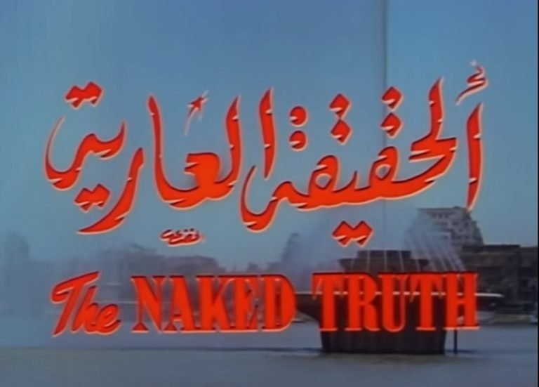
لقطة من فيلم الحقيقة العارية
كان فيلم عاطف سالم "الحقيقة العارية" (1963) بطولة ماجدة وإيهاب نافع أحد الأفلام القليلة التي سجَّلت عملية بناء السد بالألوان. يدور الفيلم حول مرشدة سياحية تريد أن تستقل بذاتها وتثبت نفسها، وينتهي بها الأمر إلى السفر إلى أسوان في رحلة سياحية لتقع في غرام إيهاب نافع، المهندس الذي يعمل ضمن آلاف آخرين في بناء السد، وبالطبع لا تستطيع مقاومة إغراء المهندس الوسيم وتتخلى عن أحلامها وتتزوجه.
يُظهر الفيلم عملية بناء السد، وحجم العمل الذي تطلبه تنفيذ المشروع. ولكن لا تنتهي المصادفات بين اسم الفيلم والواقع. فكما تخلت ماجدة عن أحلامها من أجل التماهي مع توقعات المجتمع المجتمع نفسه الذي حاربت توقعاته في بداية الفيلم، تخلى النظام عن الوعود التي وعدها لسكان النوبة وللفلاحين، من خلق "وادي نيل جديد" ومشروع السد كوثبة نحو المستقبل.
تصبح الحقيقة العارية ليس فقط أن مشروع السد كلف مصر الكثير، بل أيضًا ربط فكرة الاستقلال والتقدم والتفوق بالانتهاء من بناء السد دون التفكير في مآلات ذلك التغير الجوهري في النظام المائي والجغرافي في مصر.
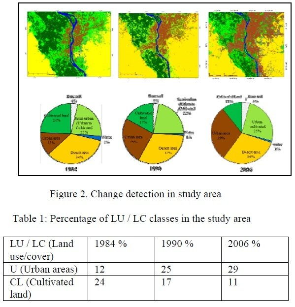
المصدر: دراسة طاهر رضوان وجي آلان بلاكبيرن وآخرون، "خسارة فادحة من الأراضي الزراعية تهدد الأمن الغذائي في دلتا النيل"، دورية الاستشعار عن بعد، 2019
لعل أهم نتائج بناء السد بجانب توفير مياه للري طوال العام، هو فقدان الطمي الذي كان يترسب على جانبي النيل وفي دلتاه. بجانب دوره الأساسي كسماد طبيعي يسمح بتكوين الأراضي الزراعية شديدة الخصوبة كان يجب الاستعاضة عنها بأسمدة كيماوية فإن الطمي كان يسمح بترسب مواد سلتية تحد من تآكل سواحل مصر الشمالية. تظهر الدراسات على مدار خمسين عامًا تراجع وتآكل الساحل الشمالي، وخصوصًا في مناطق ذات كثافة سكانية مثل مدينة رشيد ودمياط بشكل كبير، ومن المتوقع تراجع الساحل بشكل أكبر في ظل ازدياد وتيرة التغيرات المناخية التي تنذر بارتفاع منسوب مياه البحر المتوسط بشكل غير مسبوق.
لم تخسر أراضي الدلتا الترسبات السنوية التي كان يحملها الفيضان فقط، بل ومع تداعي مشروع دولة يوليو منذ منتصف الستينيات وتحويل كثير من ميزانية الدولة من أجل التسليح من أجل سلسة من الحروب المتواصلة أصبح الانتقال إلى العاصمة، بكل ثقل تاريخ طويل من المركزية وتهميش الأطراف، أمرًا لا مفر منه. فبدأت هجرات واسعة من جميع أنحاء مصر، ومن الدلتا بالأخص، وبالتوازي مع سياسات زراعية لم تعلي من مصلحة الفلاحين أو تنتبه إلى احتياجاتهم، لأشكال مختلفة من التحكم وسوء الإدارة، ومع توقف الفيضانات السنوية التي كانت من ناحية تقوم "بغسل التربة" ازدادت نسبة الملوحة في أراضي الدلتا بوتيرة متسارعة مع نهاية السبعينيات مع غياب سياسة حقيقية لمكافحة تبوير الأراضي الزراعية وتوفير تسميد طبيعي، بدأ الفلاحون والمزارعون بيع أراضيهم الزراعية وتحويلها إلى أراض عمرانية بشكل في ظاهره عشوائي، ولكنه مرتبط بالأساس بقرب أو بعد تلك الأراضي عن المرافق الأساسية شبكات الطرق والكهرباء على سبيل المثال. وبالنظر إلى الرقعة الزراعية الأهم في مصر؛ منطقة الدلتا وما حولها، يظهر بشكل مفزع تراجع الأراضي الزراعية لصالح تبويرها وتحويلها إلى مناطق سكانية وعمرانية.
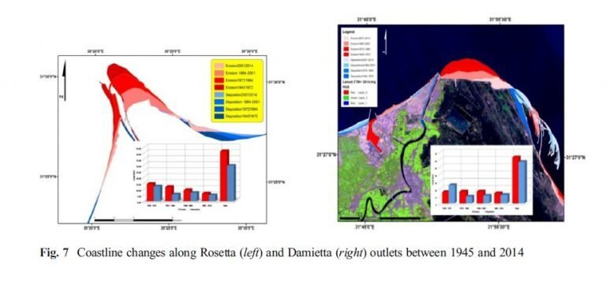
دراسة هشام عبد المنصف، سكوت سميث وكمال درويش، آثار السد العالي بأسوان بعد 50 عاما، 2015
سُميت تلك الظاهرة بالتوسع الحضري والعمراني غير الرسمي أو العشوائي وكأن فشل الدولة في كسر مركزية العاصمة ومرافقها الأساسية وسحق المزارعين والفلاحين لا يرقى لأن يكون سياسة رسمية وممنهجة من الدولة ولكنه مشكلة الفلاحين وسكان الأطراف. فلا تكاد تخلو قرية أو منطقة زراعية في الدلتا من ذلك المشهد. قطع زراعية صغيرة تتخللها مجموعة من المباني الأسمنتية.
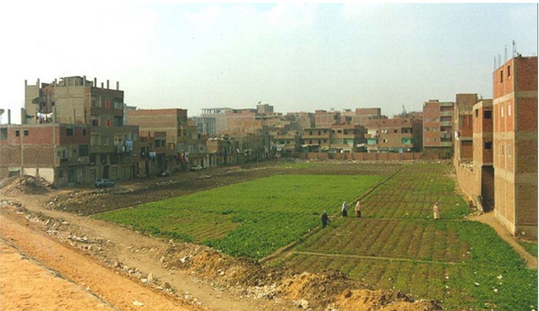
منظر نموذجي من الدلتا يظهر التوسع العمراني في الأراضي الزراعية
هنا يطالعنا سؤال؛ ماذا يمكن أن نفعل بعد أن تأكد لنا أن مستقبل مصر المائي في خطر شديد فشل مفاوضات سد النهضة المرة بعد الأخرى ومع تغيرات مناخية عنيفة، أصبحت تمثل تحديًا واضحًا لاستمرار سياسات ما بعد دولة يوليو.
هل من الممكن استلهام ذلك النموذج غير الرسمي في حد ذاته كحل؟ بمعنى أن يُعترف بالاستخدامات المتعددة للأراضي الزراعية مع التوسع في أنماط مختلفة ومتنوعة من الزراعة ومع تطوير سياسات وآليات تعلي من مصلحة الفلاح والمصلحة المحلية على مصلحة المستثمرين أو قطاع الخاص؟
لست خبيرًا في السياسات العمرانية أو الزراعية، وبالفعل هناك عوامل ومتغيرات عدة يجب أخذها في الحسبان عند محاولة تطوير سياسة زراعية أكثر عدالة، وأكثر قدرة على التوافق مع التغيرات المناخية القادمة. وعلى الرغم من تقديري للمتخصصين وخبرتهم لا يمكن أن يكون هناك أي جدل بشأن أن السياسات الزراعية والعمرانية التي تبنتها مصر على مر تاريخها منذ دولة يوليو جاءت على حساب السواد الأعظم من الشعب المصري الفلاحين والمزارعين تارة بشكل أبوي وسلطوي سعى إلى تحقيق نموذج التنمية الناجح دون النظر إلى الطبيعة السكانية لهذا البلد وجغرافيته الحساسة يعيش 98% من سكان مصر على 8% من مساحتها. وتارة أخرى بصلف ولامبالاة من نظام انتهج النيوليبرالية وأشكالها المختلفة في محاولات حثيثة للتخلص من عبء المسؤولية تجاه نحو 60% من الشعب المصري والنتيجة أن نحو 60% من هذا الشعب يعاني أشكالاً مختلفة من الفقر.
ولكن ربما آن الأوان أن "نتخلى عن سبيل" آباء دولة يوليو، ونتركهم في فضاء ضلالات ما بعد الاستقلال والهوس بتحقيق دولة قوية حتى لو كانت على حساب حياة مواطنيها وكأن الدولة كيان منفصل لا علاقة له بالمواطنين.
إن الظلام سيحل وليس كوفيد-19 وأشباهه ببعيد ويفرض علينا ليس فقط رؤية واعتبار الموت كوضع حتمي كلنا هنموت كده كده ولكن يفرض علينا الرجوع مرة أخرى إلى الأرض التي نعيش عليها في محاولة فهم معنى أن تعيش في مكان بعينه له طبيعة جغرافية معينة، أنماط معينة من المناخ، مجموعة من الموارد والمسؤولية المتبادلة بيننا كشركاء في هذا المكان لا كمجموعة من البشر فرض عليهم نظام سياسي سلطوي مجموعة من الاعتبارات والأفكار المنفصلة عن واقعنا، بل كمجموعة من البشر نرى أننا جزء من العالم، مشغولين بحياة ورفاهة إخواننا وإخواتنا وأننا، حتى ينتهي ذلك العالم، لنا الحق في العيش فيه بكل سبل الراحة والكرامة مما يضمن استمراره ويضمن لنا تلك الحرية والفاعلية.
تم تقديم بعض أفكار هذا النص، على شكل محاضرة، في إطار فعاليات تيرا نوفا: نحو مدن مستدامة، 16-19 ديسمبر 2019، بالتعاون مع "حركة لتطوير وأبحاث الرقص" وأدهم حافظ وبدعم من المعهد الفرنسي بمصر.